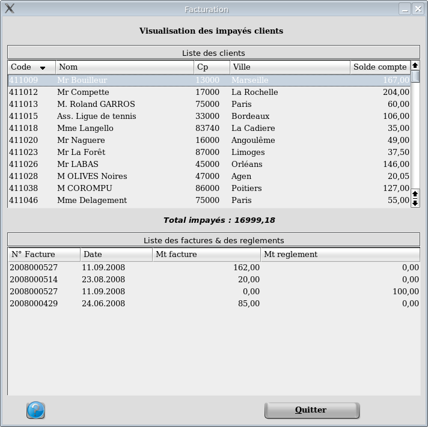

L'écran se divise en deux parties. La partie haute est la zone d'affichage de l'ensemble des clients avec pour chacun le total de leurs impayés puis en dessous le total général. La partie basse affiche le détail des écritures non lettrées pour le compte sélectionné dans la partie haute. On s'aperçoit ici que la facture 2008000527 a été partiellement réglée
Cet écran peut aussi vous servir pour faire disparaitre une ligne des impayés. Il suffit de sélectionner la ligne souhaitée puis de faire "Suppr"
----------------------------------------------------------------------------------------------------------------------
retour en haut de la page
Retour a l'index